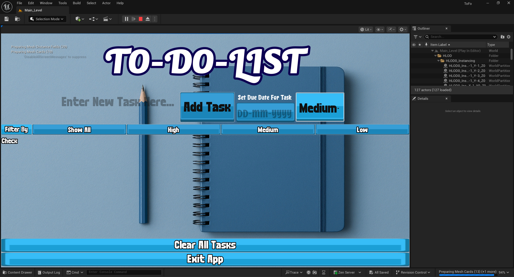
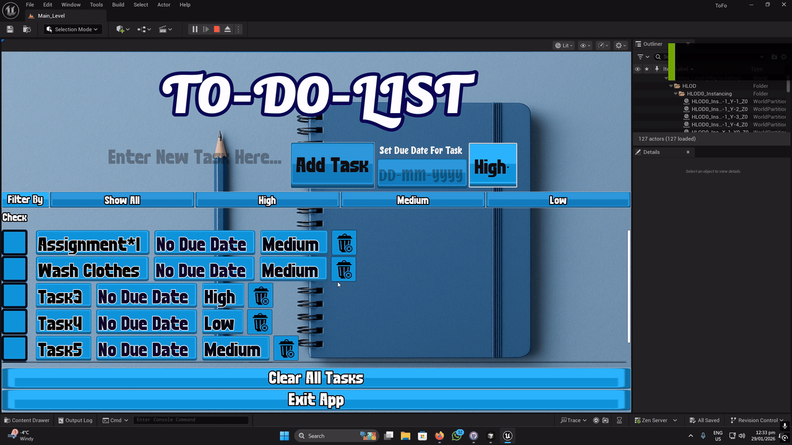
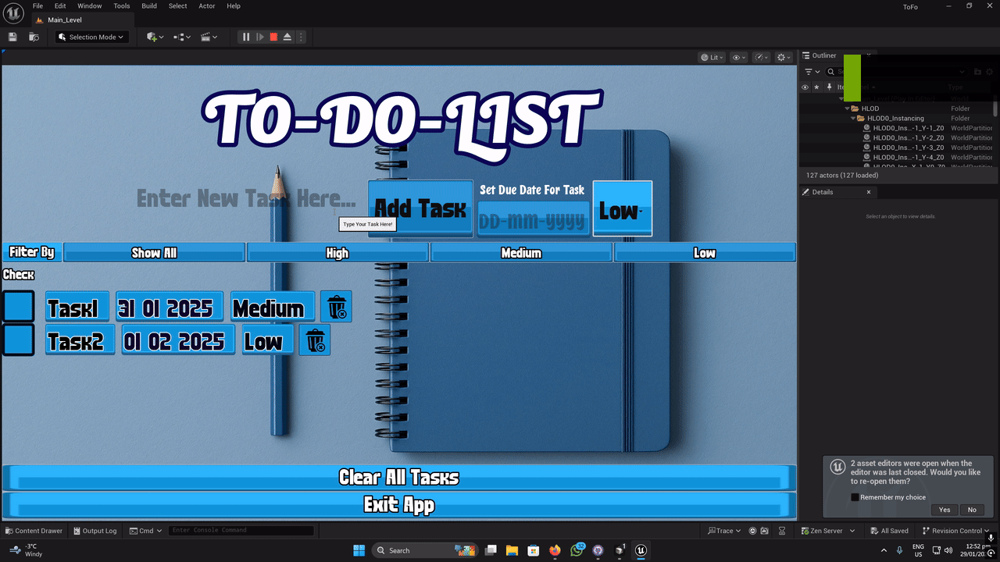

Project Overview
A to-do list application built inside Unreal Engine 5, designed as a UI-focused “app-style” experience rather than a traditional game. It uses Unreal Motion Graphics (UMG) for the interface and Blueprints for all application logic, demonstrating how UE5 can be used to prototype functional productivity tools and interactive UI systems.
The app supports creating and managing tasks through a clean, responsive interface with typical to-do workflows (adding, updating, completing, and organizing tasks), while emphasizing UI/UX structure, widget composition, and event-driven Blueprint programming.
Category
Task Management Utility
Studio
Personal Project
Platform
PC, Mac OS, Linux
Engine & Tools
Unreal Engine 5, UMG, Blueprints
Duration
2024
Team Size
Solo Developer

Tech Stack
Core Engine & UI
- Unreal Engine 5
- UMG (Unreal Motion Graphics)
- Widget Blueprints
- ScrollBox / ListView-style layout
- Input fields & button widgets
Logic & Data
- Blueprint visual scripting
- Event-driven architecture
- Custom structs / data models
- State management
- SaveGame (persistence)
UI/UX & Patterns
- Reusable task-row widgets
- Event bindings (OnClicked, TextCommitted)
- Render-list update pattern
- Visual hierarchy & feedback
Features & Contributions
Task creation flow
Add new tasks through an input-driven UI with clear, responsive controls.

Task list rendering
Display tasks dynamically in a scrollable list/grid that updates with the underlying data.

Completion state
Mark tasks as done/undone with immediate visual feedback.
Editing and deletion
Update task text and remove tasks from the list through the UI.

UI polish
Button states, hover/pressed feedback, consistent spacing and typography, and clear visual hierarchy.

Technical Implementation
UI structure (UMG)
The interface uses a main “app” widget that hosts the input area (task entry) and a list container (e.g. ScrollBox/ListView-style pattern). Reusable task-row widgets encapsulate per-task controls (complete/edit/delete) and visuals.
State and data model (Blueprints)
Tasks are stored in an in-memory collection (e.g. an array of structs or objects) representing each task’s fields (title, completion state, etc.). Event-driven updates: when a task is added/edited/toggled, the UI refreshes by creating or updating the corresponding task-row widget(s). UI events (Button OnClicked, TextCommitted, etc.) are bound to Blueprint functions for consistent, predictable behavior.
UI updating pattern
A “render list” function clears and repopulates the list container when the underlying data changes, keeping the prototype simple and reliable.
Persistence
Using UE5 SaveGame, the app serializes the task array on save and loads it on startup so tasks persist between sessions.